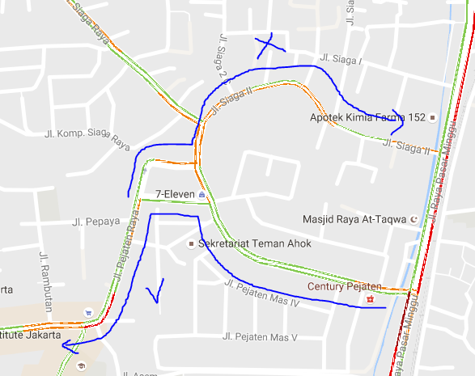

Free Will?
Situation
Yesterday (Fri, 26/8/2016), I came to UI to congratulate my friend who are graduated (congrats guys! See you on top!). After that, I have to rush myself to church (18.15 from Depok, 20.00 at church). With a motorcycle, UI - Church (Depok - Kalideres) takes approximately 100 minutes in normal traffic and normal route. However, on a Friday evening, Jakarta's traffic is, obviously, not "normal".
So I took an extensive look at Google Maps before driving, then I gave a verdict that:
- My usual route, TB Simatupang - Jalan Panjang - Puri, was not passable. MRT construction screws TB Simatupang hard enough to give it a > 3KM red label in Gmaps,
- My 2nd usual route, Pasar Minggu - Arteri Tol Dalam Kota - Daan Mogot, was also not passable. Pasar Minggu looks bleak, Gatot Subroto is never friendly, Slipi was bloody red, and Daan Mogot sucks lately.
Two Decisions
The First Decision: Yeah. Nothing's gonna stopping me from trying the Pejaten - Kemang route, which looks fairly promising. In the maps, It looks that at the dreaded Pasar Minggu junction, I should just turn left, then go straight until I see Pejaten Vilage.
I did that, and I was surprised that after the junction, instead of going straight, I must turn left at the, lets say, Junction A (well, this is not straight bro). Then I saw Junction B. The logic is, if I turn left again, I would be back at Pasar Minggu (left - left - left = back). So to maintain the straight route, The Second Decision: I turned right.
Result
And, I was woefully shocked when I saw myself BACK at Pasar Minggu street. Damn. My decisions couldn't save me from me being a scumbag.
So Yeah. I drove my bike.
First. The Pasar Minggu street was not as bleak as I thought. The traffic jam have partly subsided since last time I looked at the maps. I passed the street without any major congestion. Second. Gatot Subroto was (unexpectedly) as friendly as if I am driving at 3 AM. Ez full throttle. Third. It was true that Slipi was bloody red. But only for car drivers. There were enough space for motorcyclist to rake their speed up to 50 kmh.
Fourth. Lol jk. There was no fourth. The other part of Slipi was totally jammed, so I decided to take another risk - trying to craft my way to Daan Mogot via Palmerah (something I have never tried before). Well, this time I managed to find the way. And again, Daan Mogot's traffic jam has totally subsided. In the end, I took 110 minutes - (only) 5 minutes late. So, moving back to Pasar Minggu was the right thing to do.
What I've Learned - Free Will?
It was my free will that stopped me from taking Pasming route. It was my free will that allowed me to take the risk. It was also my free will that allowed me to take the right turn at the Junction B (because of this right turn, I failed to make it to Pejaten).
I did what I wanted to, but I realize that, sometimes, I am unable to control the consequences of my decisions. I am unable to ensure that my free will always yields the best result. I didn't even know what were I doing with my free will (that wrong right turn at Junction B - I didn't realize that the roads before Junction A and after Junction B are curved, so because of that premise, my logic to turn right is entirely flawed).

My free will fails my own intentions (I didn't even arrive to Pejaten). But what I thought was totally wrong (taking Pasming route), actually was the right thing to do. I planned my course. I executed my course. My course fails. But it's all for my own good.
Earlier this week, my small group member asked me about free will from Proverbs 16:1,9
"To humans belong the plans of the heart, but from the LORD comes the proper answer of the tongue." // "In their hearts humans plan their course, but the LORD establishes their steps."
For me, this experience, and above verses, lays out a good answer of how free will works. What I learned is that:- We have our own free will. And it is a very beautiful part of us as a human, indeed.
- But solely following on our own free will won't do any good for us, since we don't always know what's good and what's bad for us. Besides, there is also God's will, which is far more superior than our own free will. I think, It would be quite handy if we use our own free will to submit ourselves to God's will.
- Regardless of how we use our own free will (even by ingoring The One who gave us free will), we will eventually be ended where He wants us to be, and that's the best deal we can have. Deal with that.
BUT IT IS FREAKING HARD, DON'T WE ALL AGREE?